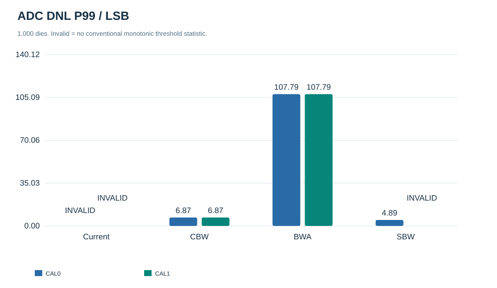
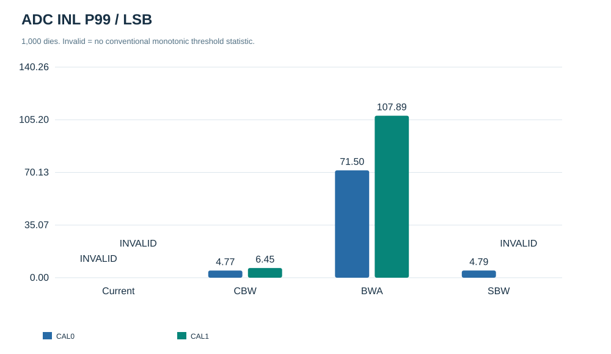
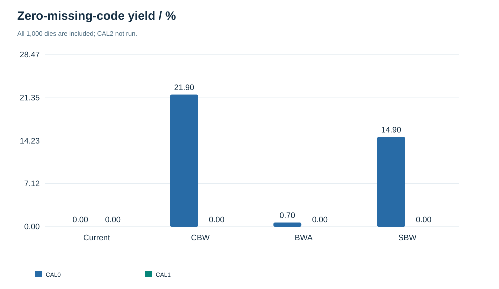
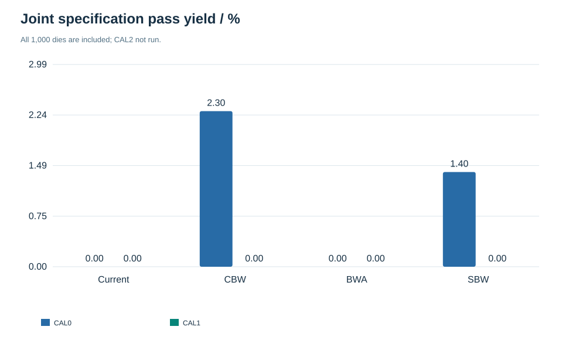
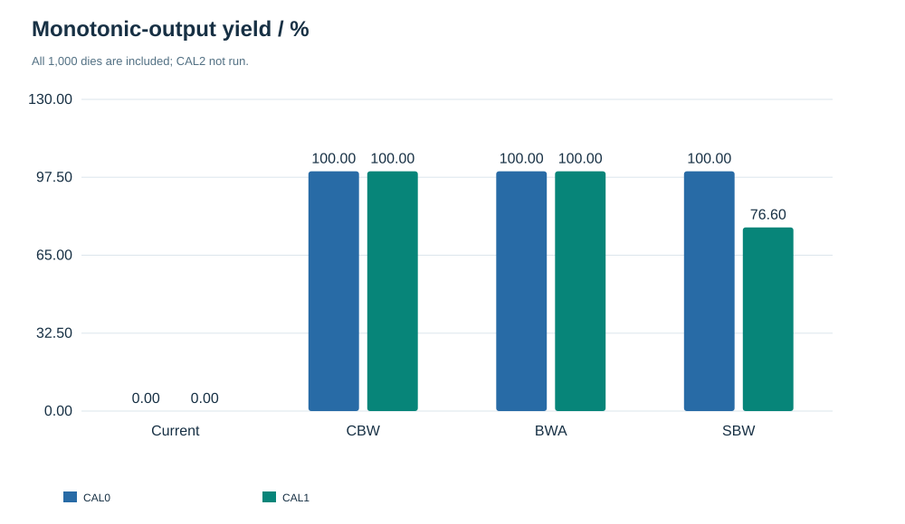
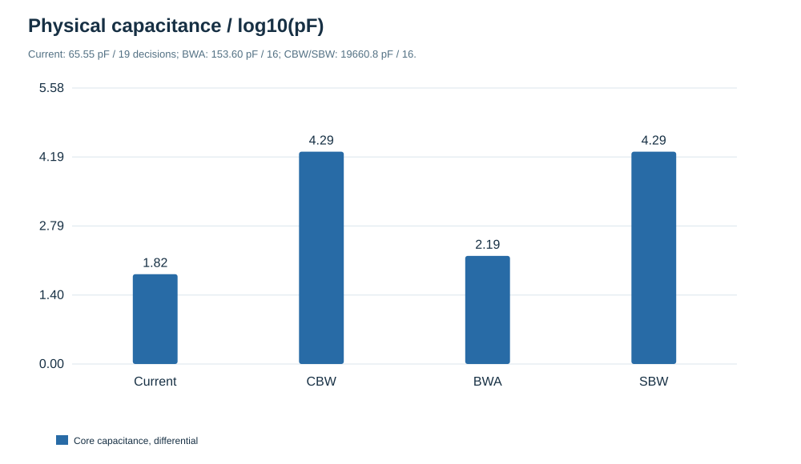
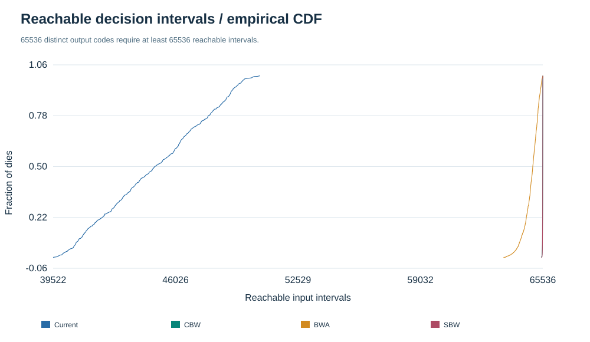
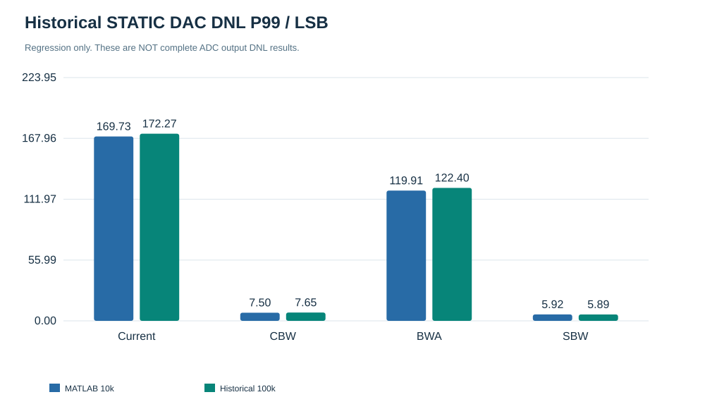

PHASE 0—3 / MATLAB / ORACLE CALIBRATION
知道全部真实位权，
能否救回完整16-bit ADC？
四架构原版 · Cu 150 fF · 单位失配 σ=1.6326% · 每架构1,000颗随机芯片
本轮结论的边界：评估原始模拟搜索 + 明示的 CAL1 数字解码器。校准并没有增加比较次数。CAL2 与 Current-R/BWA-R 尚未运行；不能据此宣布最终赢家。
01 / 真正比较的路径
物理电容随机实现
P/N独立→C\Q节点矩阵
真实有效位权→逐次比较
精确输入区间→CAL0 / CAL1
16-bit整数输出→阈值 / 缺码 / 单调性
联合达标
CAL1 仅把数字系数替换为真实位权。它不会把模拟部分替换成理想量化器。
02 / 完整 ADC 统一结果
下表为每颗芯片先求全码最大误差，再对1,000颗芯片求分位数。单位：LSB。横向滚动可查看全部字段。
“无效”＝非单调时常规单值转换阈值不存在；不是测得无限大 DNL。CSV 的 Inf 是失败哨兵，未剔除失败样本美化 P99。联合达标要求：DNL＜1、INL＜4、零缺码且单调。
03 / 校准不能凭空制造输入区间
设实际比较产生 L 个可达输入区间，每个区间的19-bit或16-bit decision固定，数字重构也只能给一个码。因此：可输出码数 ≤ L；缺码数 ≥ 65536 − L（当L不足时）。
Current原版名义仅有 39,928 个可达区间，任何确定性数字映射至少缺 25,608 个码；当前映射实际缺 25,759 码，并发生 77 次码值倒退。名义时真实位权等于名义位权，CAL1 无法改变这些事实。
这说明必须先处理当前 search/mapping；不能把失败直接归因于“校准系数精度不够”，也不能由此断言三段拓扑永远不成立。
04 / 仿真图表








05 / 旧静态结果是否复现？
均通过5%容差。此处专门复现历史 STATIC_DAC_DNL 口径，不把它当成上表 ADC_OUTPUT_DNL。旧Current与其他三种的端点约定不完全相同；本轮ADC统一采用转换阈值端点拟合。
06 / 下一步值得验证谁？
Current-R 与 BWA-R 是下一轮搜索/冗余优化优先对象，不是已验证合格方案。应先让新搜索通过 nominal + CAL1，再扫 CAL2 位宽与估计误差。
Current有65.55pF和已有设计复用优势；BWA原版153.60pF、仅一级桥。CBW/SBW各19660.8pF，在本轮没有展示足以抵偿电容代价的完整16位恢复能力。不能用面积评分掩盖硬指标不通过。
CAL2所需位宽、可容忍校准误差、优化候选决赛表：未运行，留待下一阶段。
07 / 口径与下载
Current输入±1.024V、参考1.8V原样保留；其余原版采用自然满量程归一化[0,1]。所有芯片使用同一K面积失配模型。无噪声、offset、settling、PEX、系统梯度。只检验静态模拟搜索与数字位权重构。
单调时：LSB_EP=(T[65535]−T[1])/65534。只对内部bin计算DNL；全部65536码都参加缺码检查。1000样本不等于量产良率保证。
详细报告 · 统一CSV · 代表芯片索引 · 拓扑审计 · 复现方法 · 局限性
MATLAB 25.2.0.2998904 (R2025b) · 完成时间 2026-10-15 17:00:43 · 旧项目文件未覆盖